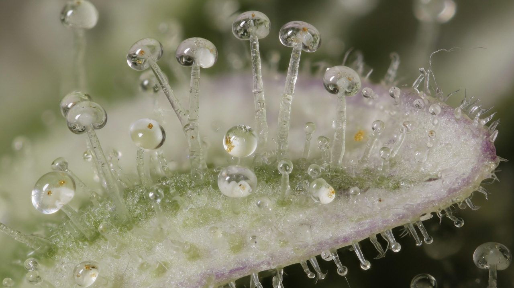
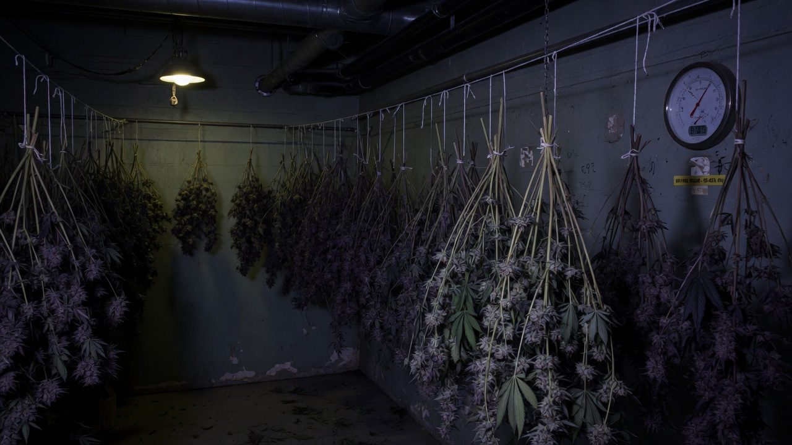
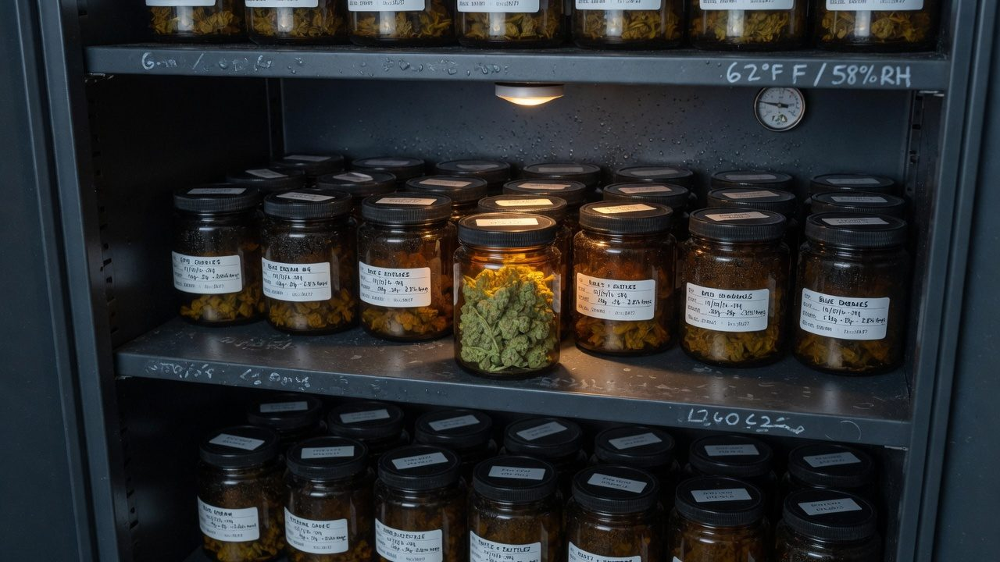
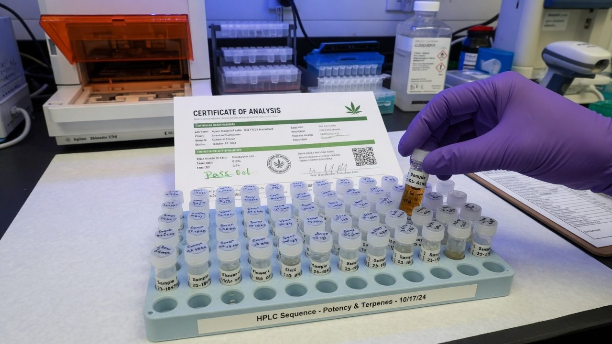

Cannabinoids and terpenes: the chemistry that matters
Two families of molecules carry all the value in this industry — and both are built in the same microscopic gland, as acids, on one assembly line. This is the grower's field guide to that chemistry: where it is made, what each compound is and is not, how it degrades, and what you actually control.
The Chemistry in Plain English
Every price negotiation, every lab report, every argument about quality in this industry comes down to two families of molecules: cannabinoids (the potency) and terpenes (the smell and flavour). Both are made in the same microscopic gland on the flower surface — the trichome — and almost everything a grower does either builds that gland's contents or wastes them. This paper is the field guide: where the compounds are made, how the plant assembles them, what each one is and is not, how they fall apart, and which levers you actually hold.
The scale of the chemistry is bigger than the market suggests: researchers have reported more than 500 distinct compounds from cannabis, including 125 cannabinoids and about 120 terpenes[1]. Commercially, perhaps six cannabinoids and eight terpenes do nearly all the talking. Learn those, and every COA, every strain menu and every marketing claim becomes readable.
It will not tell you what any compound does to a patient. Effects are described here only as reported or under study, because that is the honest state of most of the evidence — and because therapeutic claims are the regulator's and clinician's lane, not a grow guide's. This is chemistry for growers: what the molecules are, where they come from, and how not to lose them.
Accuracy, self-review, and grain-of-salt notes
We've gone to great lengths to keep these guides honest. One of the main ways we do that is self-review: we actively look for claims that are subjective, only lightly backed by literature, or based on grower practice rather than a controlled study — and we call those out instead of dressing them up as settled science.
Often there simply is no paper for the decision you're making. In those cases we're drawing on what other growers report and what has worked in our own rooms. That can still be useful — but it is not a lab proof. Do what works for your plants, your room, and your meters. If a table disagrees with your crop, believe the crop and log the difference.
- Core definitions and measurement units used in the paper
- Safety-critical limits where occupational or standards sources are cited
- Numeric stage targets (light, climate, feed) as starting bands, not laws
- SOPs that work in many rooms but need your genetics and meters
- Any single-number 'guaranteed' yield or potency claim without a multi-site trial
- Controller setpoints copied from another facility without re-calibration
See something glaringly wrong? Tell us and we'll fix it. Please open a GitHub issue with the paper name and what looks off (include a source if you have one): Report an accuracy issue. Local law, labels, and licences always override any recipe here. Inline notes labelled grain of salt flag the highest-risk over-trust points in the text.
Core Answer
Everything the industry trades on is made in trichome heads, as acids (THCA, CBDA — not THC and CBD), on one assembly line whose hub is a single molecule: CBGA, the ‘mother cannabinoid’[3]. Genetics decide the ratio of the outputs (the chemotype) and largely fix the terpene palette[7]; the grow decides how much gets made; and everything after harvest only subtracts.
The two families die differently, and that difference runs half this paper. Terpenes evaporate — the light ‘monoterpenes’ at room temperature, which is why hot fast drying smells wonderful and costs you the product[10]. Cannabinoids oxidise — THC grinds slowly into CBN under oxygen, heat and time, and light destroys it faster than anything else[17]. Flavour is lost to warm air; potency is lost to light, oxygen and years.
Potency and flavour are built once, in the same gland, as fragile acids and volatile oils — the grower's job is to pick genetics that can make them, keep the plant healthy enough to fill the warehouse, and then get out of chemistry's way: cool, dark, gentle, sealed.

Where the Chemistry Is Made: Trichome Secretory Cells
Cannabis carries three kinds of glandular trichome: tiny bulbous glands, sessile glands that sit flat on the surface, and the money-maker — the capitate-stalked trichome, a resin head lifted on a stalk. Detailed microscopy shows the stalked heads carry 12–16 secretory disc cells at their base, versus eight in sessile heads, and it is the stalked type whose signature tracks high cannabinoid content[2]. Strikingly, stalked trichomes develop from sessile-looking intermediates as the flower matures — the frost you watch build through flowering is a population growing up, not just growing more[2].
The division of labour matters. The disc cells are the factory floor — isolated trichomes show intense expression of the cannabinoid and terpene biosynthesis genes[2] — and the finished resin is exported into the storage cavity, a sac whose only wall is a stretched waxy cuticle. The plant does not reabsorb it. Once made, the inventory just sits there: defended, fragile, and entirely surface-mounted.
Three practical consequences fall straight out of the anatomy:
- Potency lives on the surface. Resin scales with bract and sugar-leaf surface area, not bud mass — which is part of why dense, well-lit flower with high bract density assays above larfy bulk.
- Every rough touch is theft. The cavity wall is a film of wax. Tumbling, squeezing, over-handling and aggressive trimming rupture heads and leave the resin on gloves and machinery instead of in the jar.
- The whole solventless industry is anatomy. Ice-water hash and dry sift are just ways of snapping cold, brittle heads off intact — collecting the warehouse without the building.
A loupe tells you more than a lab turnaround: head density, head size, and how intact the heads are after handling. If your trim room's product looks sandblasted under 60×, the potency you grew is in the machine, not the bag.
Biosynthesis: Two Feedstocks, One Hub
The pathway reads like a small factory diagram, and it is worth learning because chemotypes, CBG flower, THCV and half the COA make sense only downstream of it. The plant starts with hexanoyl-CoA — a six-carbon starter drawn from fatty-acid metabolism — and extends it with three malonyl-CoA units to build olivetolic acid, the aromatic core, using a polyketide synthase working with olivetolic acid cyclase (OAC)[3].
Then the two halves of the molecule meet. A membrane-bound prenyltransferase — first demonstrated in 1998 as GOT, geranylpyrophosphate:olivetolate geranyltransferase — bolts a ten-carbon terpene unit, geranyl diphosphate (GPP), onto olivetolic acid. The product is cannabigerolic acid — CBGA. The enzyme is fussy: it accepts olivetolic acid but not its decarboxylated cousin olivetol, which is why the plant's whole line runs in acid form[4].
CBGA is the hub — the mother cannabinoid. Three synthases compete for it: THCA synthase folds it into THCA, CBDA synthase into CBDA, and CBCA synthase into CBCA[3]. Which of those enzymes a plant carries in working order is exactly what the chemotype locus encodes — hold that thought for two sections.
Two footnotes worth knowing. First, the propyl series: when the line starts from a shorter starter, the same machinery yields divarinic acid, then CBGVA, then THCVA and CBDVA — the three-carbon-tail ‘varin’ cannabinoids like THCV[3][1]. Second, the absences: the plant makes essentially no CBN and very little neutral THC. Both are breakdown products of what the enzymes made, not products of the enzymes[3].
Because it converts three market curiosities into obvious chemistry: CBG-rich flower is a plant whose downstream synthases are broken, so the hub piles up; chemotype is which synthase alleles you inherited, so no environment trick flips THC into CBD; and CBN on a COA is a storage report, not a genetic trait you can breed toward or away from at the synthase level.
THCA Is Not THC: Decarboxylation
The single most misunderstood fact in cannabis chemistry: the living plant does not make THC in any meaningful quantity. It makes THCA — the same molecule wearing a carboxyl group (–COOH) — and THCA is not intoxicating in that form. Raw flower is, chemically speaking, a bag of inactive acid. Heat removes the carboxyl group as CO₂ gas and switches the molecule on: that is decarboxylation[5].
A lit joint or a vape coil decarbs in a fraction of a second. Everything else — ovens, extracts, edibles processing — runs on kinetics, and the kinetics have been measured properly. Heating cannabis extract between 80 °C and 145 °C, Wang and colleagues found decarboxylation follows clean first-order behaviour, with rate constants for THCA of 0.18, 0.66 and 1.83 × 10⁻³ s⁻¹ at 80, 95 and 110 °C[5]. Translated: at 110 °C, half the remaining THCA converts roughly every six minutes.
The acids are not all equally willing. THCA converts about twice as fast as CBDA or CBGA at the same temperature — its activation energy is lower (88 kJ/mol vs 112 and 109)[5]. Anyone processing CBD material on a THC schedule under-decarbs it.
Decarb is a two-front war. Stop too early and inactive acid remains; push too hot or too long and you start burning the building down — the freed THC oxidises onward toward CBN, and the monoterpenes, whose volatility at decarb temperatures is enormous, stream out of the material[10]. One detail from the kinetics work is telling: run under vacuum, THCA converted to THC with no CBN formation observed — starve the reaction of oxygen and the onward degradation largely stops[5].
Room temperature is just a very slow oven. Flower in storage drifts from acid toward neutral over months — which is why an old jar assays differently from the COA printed at harvest, before any potency was actually lost. If total THC is stable but the THCA:THC split has moved, you are watching decarb, not degradation.
The Cannabinoids, One by One
Six cannabinoids cover nearly every commercial conversation. For each: what it is, where it comes from, and — just as important — what it is not. Effects language here is deliberately conservative: reported means human use reports and early studies, not established medicine.
What it is: the principal intoxicating cannabinoid; in the plant, almost entirely present as THCA. The molecule the drug-type market prices.
What it is not: a quality score. Two flowers at 20% total THC can be worlds apart in aroma, freshness and resin condition — potency is one column of the COA, not the verdict.
What it is: the major non-intoxicating cannabinoid; dominant in chemotype III plants and the hemp industry's backbone. Among the most-studied cannabinoids in medicine.
What it is not: a licence for claims. What CBD does or does not treat is clinical territory; a grower's honest statement stops at the measured percentage.
What it is: the neutral form of the mother acid. Most flower shows well under 1% because CBGA gets consumed making everything else; chemotype IV cultivars accumulate it because their downstream synthases are broken[8].
What it is not: ‘the new THC’. It is non-intoxicating, and most claims around it are marketing running ahead of evidence.
What it is: the oxidation product of THC — heat, oxygen and time, not any enzyme, make it. So reliable a breakdown marker that the CBN:THC ratio is used to estimate the age of stored samples[6].
What it is not: a proven sleep aid. The ‘sedating cannabinoid’ story is popular and thinly evidenced; on a COA, read CBN first as a freshness flag.
What it is: the third branch off CBGA, via CBCA synthase; known since the 1960s and genuinely one of the majors on paper[1]. Non-intoxicating; usually present at fractions of a percent.
What it is not: something most growers will ever select for — labs often don't even report it separately.
What it is: THC's short-tailed ‘propyl’ cousin from the varin line, first isolated in 1971; certain lineages carry meaningfully more[1].
What it is not: an established appetite or energy product. Reported effects are under active study; supply is scarce and mostly a breeding story for now.
Most of the remaining catalogued cannabinoids are trace relatives, isomers, or artefacts of heat, light and analysis — real chemistry, marginal commerce[1]. If a product sheet leads with an exotic letter combination, ask for the COA line that quantifies it.
Chemotypes I–V: The Ratio Is Inherited
Cross a true THC plant with a true CBD plant and score the offspring, and cannabinoid ratio behaves like a textbook Mendelian trait. The classic genetic work resolved it to a single locus, B, with two codominant alleles: BT (functional THCA synthase) and BD (functional CBDA synthase). Two copies of BT gives a THC-dominant plant (chemotype I); two of BD gives CBD-dominant (chemotype III); one of each gives the mixed, roughly 1:1 chemotype II — and F₂ crosses segregate 1:2:1, exactly as Mendel would have it[7].
The outer chemotypes complete the map. Type IV plants carry non-functional downstream synthases, so the mother acid CBGA accumulates — this is where CBG flower comes from. Type V plants make no cannabinoids at all: crosses with normal plants showed a single recessive factor (allele o) that blocks the pathway outright, again segregating 1:2:1[8]. Chemotype V is a fibre-breeding and research curiosity, but it proves the point: every rung of the ratio ladder is genetics.
The crucial nuance: the locus controls the ratio, not the amount. How much total cannabinoid a plant makes is polygenic and environment-sensitive — canopy health, light, maturity at harvest. So breeding and seed choice set the split; the grow sets the size of the pie[7].
Chemotype is testable from a young plant's leaf assay — you do not need to flower out a room to learn a ‘CBD line’ is really chemotype II and will run hot on THC. For a medicinal market that buys certified ratios, verify chemotype before a cultivar earns bench space.

Terpene Classes: Mono vs Sesqui, and Why Volatility Rules
Terpenes are built from five-carbon isoprene units, and the count is the classification: monoterpenes (two units, C10 — myrcene, limonene, pinene, terpinolene, linalool) and sesquiterpenes (three units, C15 — caryophyllene, humulene)[9]. Cannabis makes both in the same trichomes as the cannabinoids — around 61 monoterpenes and 51 sesquiterpenes have been reported across the species[1] — and a dedicated family of terpene synthase genes sets which ones a cultivar leans on[9].
The class difference that matters operationally is volatility. Measured vapour pressures at 20 °C put the monoterpenes around 1–4 Torr — α-pinene 3.57, β-pinene 2.18, myrcene 1.69, limonene 1.13 — while the sesquiterpenes sit roughly two orders of magnitude lower (β-caryophyllene 0.021, α-humulene 0.010). The cannabinoids are barely on the same chart: CBD at 6.3 × 10⁻⁶ and THC at 5.2 × 10⁻⁷ Torr[10].
This single chart explains the drying room. Track the volatile oil of the same buds fresh and after air-drying and storage, and the monoterpene share collapses from about 92% to 62% over three months while the sesquiterpene share climbs to fill the gap[11][1] — the bright, sharp top notes leave first, and the profile drifts toward pepper and wood. Notably, drying changed the oil's proportions, not its ingredient list[11]: nothing new appears, the light fraction just walks away. Cold, slow, dark drying is not folklore; it is vapour-pressure management.
Potency survives sloppy logistics; aroma does not. A sample can hold its THC number through a hot van and a month on a shelf while its monoterpenes quietly leave. When flower smells flat but assays fine, this ladder is what happened.
The Terpenes That Run the Market
Commercial cannabis clusters into a small number of terpene profiles. Analysis of tens of thousands of US retail samples found products fall into three broad groups: high caryophyllene + limonene, high myrcene + pinene, and high terpinolene + myrcene[13] — and that popular indica/sativa/hybrid labels map poorly onto the underlying chemistry[13]. Here are the eight names worth knowing; aroma is fact, effect folklore is flagged as folklore.
Monoterpene. Earthy, musky, ripe-mango. The most common heavyweight in commercial flower and an anchor of two of the three market clusters[13]. The ‘couch-lock terpene’ story is folklore — what is demonstrated is aroma and abundance, not sedation.
Monoterpenes. Pine needle, resin. The most volatile of the majors (α-pinene 3.57 Torr[10]) — first out the door in a warm dry. Memory and alertness claims remain under study; treat as aroma.
Monoterpene. Complex — floral, piney, a little petrol. Rarely dominant, but when it is, it defines the cultivar's whole nose; one of the three cluster signatures[13].
Sesquiterpene — pepper, clove. The exception in all of terpene science: it is a genuine cannabinoid-receptor ligand, a selective CB2 agonist (Ki = 155 nM) with no CB1 binding — a ‘dietary cannabinoid’ also found in black pepper[12]. CB2 is not the intoxication receptor, so this is pharmacology, not potency. Low volatility; survives drying well[10].
Monoterpene alcohol. Lavender. Almost always minor in cannabis, loud when present. The relaxation story borrows heavily from lavender-oil research, not cannabis trials — under study, not established.
Sesquiterpene — hops (it is the signature hop aroma compound), woody and bitter. Caryophyllene's constant companion and the least volatile major measured (0.010 Torr[10]).
Monoterpene. Sweet, green, herbal. A frequent supporting player that spikes in some cultivars; like the other monoterpenes, easily lost to heat.
Every terpene gets marketed with receptor language; caryophyllene is the only one where the receptor claim is demonstrated, replicated pharmacology[12]. Careful screening of the other majors found no direct CB1 or CB2 activity at plausible concentrations[16]. One real example and many assumed ones — which is the entourage story in miniature.
The Entourage Effect: Demonstrated vs Marketed
The claim: cannabis compounds work better together than in isolation — terpenes and minor cannabinoids shape, soften or steer THC's effect. The most influential statement of it is Russo's 2011 review proposing phytocannabinoid–terpenoid synergy across a range of indications[14]. It is a genuinely interesting hypothesis paper — and its own language is conditional: synergy, if proven, would open new product pipelines[14].
What does the ledger actually show? On the demonstrated side: caryophyllene really is a CB2 agonist[12], cannabis produces hundreds of co-occurring compounds[1], and pharmacology has plenty of precedent for mixture effects. On the other side: when the five most common terpenes were tested directly — alone and combined with THC — at human CB1 and CB2 receptors, they showed no receptor activity and no modulation of THC's signal[16]. And the sceptical reviews land hard: the term began as a ‘hypothetical afterthought’ in 1998 and has been rebranded and marketed far beyond its evidence, with the possibility of unfavourable interactions rarely mentioned[15].
| Status | Claim | Where it stands |
|---|---|---|
| Demonstrated | β-caryophyllene activates CB2 (Ki 155 nM), no CB1 | Replicated receptor pharmacology[12] |
| Demonstrated | Cannabis is polypharmacy — hundreds of co-occurring compounds | Uncontroversial chemistry[1] |
| Not demonstrated | Common terpenes act at CB1/CB2 or modulate THC there | Direct tests were negative[16] |
| Hypothesis | Whole-flower effects differ meaningfully from isolate THC | Proposed, plausible, unproven at product level[14][15] |
| Marketing | ‘This terpene profile delivers this effect’ | No controlled evidence for any specific profile→effect map[15] |
The honest reading is narrow: mixtures might matter, one mechanism is real, the specific profile-to-effect promises on retail menus are unsupported, and terpene-CB-receptor mechanisms have been directly tested and found wanting. None of this makes terpenes worthless — they are the product's flavour, its freshness record, and its identity. That is value enough without borrowed pharmacology.
State what you measured: cannabinoid ratio, total terpenes, the top five by weight, harvest and test dates. Describe aroma in aroma words. Leave effects to the people licensed to discuss them. In a medicinal framework this is not just honesty — it is compliance.

Degradation: How the Chemistry Dies
Two decays run in parallel from the moment of harvest, and they have different physics. Terpenes evaporate — fastest when warm, monoterpenes first (previous sections). Cannabinoids oxidise — THC's endpoint is CBN, and the drivers are oxygen, heat, light and time. Neither decay reverses. Every storage decision is a rate control on these two processes.
The numbers are sobering. Flower stored at 20–22 °C in the dark lost on average 16.6% of its THC in the first year, 26.8% by year two, 34.5% by year three and 41.4% by year four — and the CBN:THC ratio climbed so predictably that it is used forensically to estimate sample age[6].
The classic stability work adds the ranking of enemies. Across two years of storage trials, exposure to light — not even direct sun — was the greatest single factor in cannabinoid loss; temperature up to 20 °C was insignificant by comparison; and air oxidation caused significant losses of its own[17]. The same work supplies the mechanism nuance in Figure 8: THC lost to light does not reappear as CBN, while THC lost to air in the dark does — so a high-CBN sample was stored warm and airy, not necessarily bright[17]. Well-kept material, meanwhile, was ‘reasonably stable’ for one to two years in the dark at room temperature[17].
Terpenes degrade in storage too — not only by evaporation but by oxidation, which changes their character rather than their quantity: oxidised monoterpene notes read as stale, piney-turned-solvent, old-spice-rack. The proportional drift measured in dried, stored buds (the 92% → 62% monoterpene slide) is both losses stacked together[11].
A clear jar under retail lighting combines the top killer (light), warmth from the fixtures, and a headspace refreshed at every opening. It is the perfect machine for converting flower into CBN and flat aroma — keep display stock separate from sale stock.
What the Grower Actually Controls
Ranked by leverage, with the evidence state attached — because this is where vendor claims and grow-forum folklore concentrate.
- Genetics — dominant, and it isn't close. Chemotype is Mendelian[7]; the terpene palette is written in the cultivar's terpene synthase genes[9]; commercial chemistry clusters by cultivar family[13]. If the plant cannot make it, nothing in your environment recipe will summon it.
- Harvest timing. Trichome populations mature — heads develop, profiles shift measurably as flowers ripen[2]. Picking on the calendar instead of the trichome forfeits chemistry you already paid to grow.
- Plant health and light. A full, healthy, well-lit canopy grows more trichome real estate. This is the honest path to ‘more terpenes’: more gland, not magic inputs.
- Environment tweaks — small, contested, cultivar-dependent. See the UV story below before spending money here.
- Post-harvest — zero upside, unlimited downside. Drying, curing and storage can only preserve (previous section). Rate-control, not production.
The UV myth deserves its own paragraph because it sells hardware. The story — UV stress drives THC up as a sunscreen response — leans on small, decades-old studies. When it was finally tested properly in modern drug-type cultivars indoors, across a range of UV-B doses: no increase in cannabinoid concentration, no increase in yield, and progressively more photosynthetic damage as dose rose[18]. That is one careful trial on two cultivars, not the final word for every genotype and spectrum — but the burden of proof now sits squarely on the UV vendor, not the sceptic.
Controlled trials keep finding the same shape: genetics and plant health dominate; environmental ‘stress hacks’ deliver small, inconsistent, cultivar-specific chemistry changes at real cost to yield. Any input promising +30% terpenes should come with a COA pair and a cultivar name, or it's a story.

How It All Shows Up on a COA
A COA is this whole paper compressed into a table. The cannabinoid section reports acid and neutral forms separately — fresh, well-kept flower shows nearly everything as THCA with a sliver of THC. The two are combined with the decarb arithmetic from Figure 3:
Read past the headline number and the COA becomes a history of the sample:
- High THCA, low THC, negligible CBN — fresh material, handled cool. What you want to see.
- Neutral fraction creeping up — age or heat exposure; decarb has been running in storage (Section 5).
- CBN present and climbing — the age stamp: warm, airy or simply old storage[6].
- Terpene total low, sesquiterpene-heavy for the cultivar — the monoterpenes have left; hot dry or long shelf time[11].
- Chemotype mismatch — a ‘CBD cultivar’ reporting substantial THC is chemotype II genetics doing exactly what its B locus says[7].
Terpene panels typically report a percent-by-weight list with the top handful of compounds doing most of the total; profile shape is cultivar identity[13], and its condition is your process record. Sampling, uncertainty, and how labs vary is its own subject — covered in the lab testing paper in this series.
One COA describes a sample. Two COAs of the same lot — at packaging and months later — describe your storage. The deltas (THCA→THC drift, CBN appearance, monoterpene fade) are exactly the degradation chemistry of this paper, measured on your own product.
Failure Modes: Six Ways to Lose What You Grew
Every one of these is chemistry from earlier sections wearing work clothes. The COA tell is how you catch it after the fact; the fix is how you stop paying for it twice.
Trichome heads immature or past peak; profile you bred for never fully built[2].
Tell: potency and terpene totals below cultivar's known ceiling.
Fix: loupe the trichomes; harvest the plant, not the schedule.
The single greatest cannabinoid killer in the storage literature[17].
Tell: THC down without matching CBN rise.
Fix: opaque packaging, dark storerooms, no window displays.
Every tumble ruptures cuticle-walled heads; grinding multiplies surface area for both decays.
Tell: shake assays higher than the buds it fell from; product loses nose within days.
Fix: gentle trim settings, minimal transfers, grind at point of use only.
UV rigs and stress protocols sold on decades-old data; the controlled trial found no cannabinoid gain and dose-dependent damage[18].
Tell: spend rises, COAs don't move.
Fix: demand paired-COA evidence on your cultivar before buying photons you can't sell.
Quick Reference
| Compound | Acid parent | Origin | What it is | What it is not |
|---|---|---|---|---|
| Δ9-THC | THCA | THCA synthase ← CBGA | The intoxicating one; the priced number | A quality verdict on its own |
| CBD | CBDA | CBDA synthase ← CBGA | Major non-intoxicating cannabinoid | A licence for medical claims |
| CBG | CBGA | The pathway hub itself | Mother acid's neutral form; chemotype IV headline | ‘The new THC’ |
| CBN | — (none) | Oxidised THC — no enzyme | An age & storage marker[6] | A biosynthesised or proven-sedative product |
| CBC | CBCA | CBCA synthase ← CBGA | The quiet third branch; trace levels | Something most COAs even itemise |
| THCV | THCVA | Propyl (varin) series | Short-tail THC cousin; lineage-dependent | An established functional ingredient |
| Terpene | Class | Aroma | VP @ 20 °C (Torr) | Survives drying? |
|---|---|---|---|---|
| α-Pinene | Mono | Pine, resin | 3.57[10] | Worst — first to leave |
| β-Pinene | Mono | Pine, herbal | 2.18[10] | Poor |
| Myrcene | Mono | Earthy, mango | 1.69[10] | Poor |
| Limonene | Mono | Citrus peel | 1.13[10] | Poor |
| Terpinolene | Mono | Floral-pine, petrol | — | Poor (monoterpene) |
| Ocimene | Mono | Sweet, green | — | Poor (monoterpene) |
| Linalool | Mono (alcohol) | Lavender | — | Moderate |
| β-Caryophyllene | Sesqui | Pepper, clove | 0.021[10] | Good — plus the CB2 story[12] |
| α-Humulene | Sesqui | Hops, woody | 0.010[10] | Best of the majors |
| Number to remember | Value | Why |
|---|---|---|
| Decarb mass factor | 0.877 | total THC = THC + 0.877 × THCA on every COA |
| THCA half-life at 110 °C | ≈ 6.3 min | and CBDA/CBGA take roughly double[5] |
| Monoterpene share, fresh → stored | ≈ 92% → 62% | three months of drying + storage[11] |
| THC loss, year one at 20–22 °C | ≈ 17% | dark storage; light makes it worse[6][17] |
| Caryophyllene CB2 Ki | 155 nM | the one demonstrated terpene–receptor link[12] |
| Chemotype segregation | 1:2:1 | single locus, codominant alleles[7] |
The Mental Model
The plant builds it once; everything afterwards is subtraction. Genetics write the menu, trichomes cook and store it as fragile acids and volatile oils, and from harvest onward you are managing two decay rates — evaporation for flavour, oxidation for potency. Nothing in a bottle adds chemistry back. Cool, dark, gentle, sealed, fresh: that is the entire post-harvest playbook, and the COA will tell on you either way.
Where to next in this series: lab testing & COAs for how these numbers are actually measured (and mismeasured); harvest, dry, trim & cure for the process that spends or saves the terpenes; and hash & rosin pressing for what happens when you collect the trichome heads and take the chemistry somewhere else.
References
- Radwan MM, Chandra S, Gul S, ElSohly MA (2021). Cannabinoids, phenolics, terpenes and alkaloids of cannabis. Molecules 26(9):2774. (125 cannabinoids and 120 terpenes among >500 reported constituents.) https://pmc.ncbi.nlm.nih.gov/articles/PMC8125862/
- Livingston SJ, Quilichini TD, Booth JK, et al. (2020). Cannabis glandular trichomes alter morphology and metabolite content during flower maturation. The Plant Journal 101(1):37-56. https://onlinelibrary.wiley.com/doi/10.1111/tpj.14516
- Gülck T, Møller BL (2020). Phytocannabinoids: origins and biosynthesis. Trends in Plant Science 25(10):985-1004. https://www.cell.com/trends/plant-science/fulltext/S1360-1385(20)30187-4
- Fellermeier M, Zenk MH (1998). Prenylation of olivetolate by a hemp transferase yields cannabigerolic acid, the precursor of tetrahydrocannabinol. FEBS Letters 427(2):283-285. https://febs.onlinelibrary.wiley.com/doi/10.1016/S0014-5793(98)00450-5
- Wang M, Wang Y-H, Avula B, et al. (2016). Decarboxylation study of acidic cannabinoids: a novel approach using ultra-high-performance supercritical fluid chromatography/photodiode array-mass spectrometry. Cannabis and Cannabinoid Research 1(1):262-271. https://pmc.ncbi.nlm.nih.gov/articles/PMC5549281/
- Ross SA, ElSohly MA (1997). CBN and Δ9-THC concentration ratio as an indicator of the age of stored marijuana samples. Bulletin on Narcotics (UNODC) 49(1-2):139-147. https://www.unodc.org/unodc/en/data-and-analysis/bulletin/bulletin_1997-01-01_1_page008.html
- de Meijer EPM, Bagatta M, Carboni A, et al. (2003). The inheritance of chemical phenotype in Cannabis sativa L. Genetics 163(1):335-346. https://pmc.ncbi.nlm.nih.gov/articles/PMC1462421/
- de Meijer EPM, Hammond KM, Sutton A (2009). The inheritance of chemical phenotype in Cannabis sativa L. (IV): cannabinoid-free plants. Euphytica 168:95-112. https://link.springer.com/article/10.1007/s10681-009-9894-7
- Booth JK, Bohlmann J (2019). Terpenes in Cannabis sativa — from plant genome to humans. Plant Science 284:67-72. https://www.sciencedirect.com/science/article/pii/S0168945219301190
- Eyal AM, Berneman Zeitouni D, Tal D, et al. (2023). Vapor pressure, vaping, and corrections to misconceptions related to medical cannabis' active pharmaceutical ingredients' physical properties and compositions. Cannabis and Cannabinoid Research 8(3):414-425. https://pmc.ncbi.nlm.nih.gov/articles/PMC10249740/
- Ross SA, ElSohly MA (1996). The volatile oil composition of fresh and air-dried buds of Cannabis sativa. Journal of Natural Products 59(1):49-51. https://pubs.acs.org/doi/10.1021/np960004a
- Gertsch J, Leonti M, Raduner S, et al. (2008). Beta-caryophyllene is a dietary cannabinoid. PNAS 105(26):9099-9104. (Selective CB2 agonist, Ki = 155 ± 4 nM; no CB1 binding.) https://pmc.ncbi.nlm.nih.gov/articles/PMC2449371/
- Smith CJ, Vergara D, Keegan B, Jikomes N (2022). The phytochemical diversity of commercial cannabis in the United States. PLoS ONE 17(5):e0267498. https://journals.plos.org/plosone/article?id=10.1371/journal.pone.0267498
- Russo EB (2011). Taming THC: potential cannabis synergy and phytocannabinoid-terpenoid entourage effects. British Journal of Pharmacology 163(7):1344-1364. https://pmc.ncbi.nlm.nih.gov/articles/PMC3165946/
- Cogan PS (2020). The ‘entourage effect’ or ‘hodge-podge hashish’: the questionable rebranding, marketing, and expectations of cannabis polypharmacy. Expert Review of Clinical Pharmacology 13(8):835-845. https://www.tandfonline.com/doi/abs/10.1080/17512433.2020.1721281
- Finlay DB, Sircombe KJ, Nimick M, Jones C, Glass M (2020). Terpenoids from cannabis do not mediate an entourage effect by acting at cannabinoid receptors. Frontiers in Pharmacology 11:359. https://www.frontiersin.org/journals/pharmacology/articles/10.3389/fphar.2020.00359/full
- Fairbairn JW, Liebmann JA, Rowan MG (1976). The stability of cannabis and its preparations on storage. Journal of Pharmacy and Pharmacology 28(1):1-7. https://academic.oup.com/jpp/article-abstract/28/1/1/6196321
- Rodriguez-Morrison V, Llewellyn D, Zheng Y (2021). Cannabis inflorescence yield and cannabinoid concentration are not increased with exposure to short-wavelength ultraviolet-B radiation. Frontiers in Plant Science 12:725078. https://pmc.ncbi.nlm.nih.gov/articles/PMC8593374/
Citations marked in-text as [n] map to this list. Primary literature and official guidance except where noted. Cannabis tissue culture is strongly genotype-dependent, verify dilutions, hormone doses and local regulations against the primary sources before relying on them.